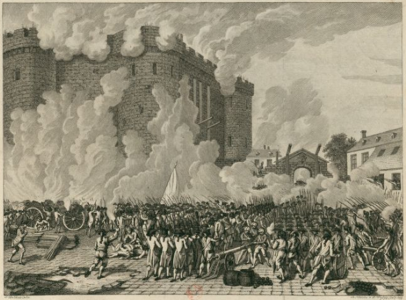

The French Revolution (1789-1799)
Prologue: Prior to the Revolution
Great Britain and France fought for control of their colonies, like India and America, from 1754 to 1763. The so-called Seven Years War ended with Great Britain taking over a large majority of the French colonies. When the American Revolution started in 1775, King Louis XVI of France was willing to support America because it would harm Great Britain and he could avenge his grandfather’s loss during the Seven Years War.

King Louis XVI assumed the throne in 1774 at age 19. Although King Louis XVI was educated, he was not properly prepared to govern because he was not expected to become king. He was third in line for the crown until his two older brothers and father died unexpectedly of tuberculosis.
King Louis XVI married Marie Antoinette to form a political alliance with Austria. She was known for her beauty and was initially favored by the people of France.
What sparked the French Revolution?
King Louis XVI was not a great ruler, and his decisions with the country’s money created problems for France. The country had accumulated debt from the Seven Years War and the money he lent to America added to the debt. He and Queen Marie Antoinette spent money on extravagant purchases. They moved from Paris to a lavish palace in Versailles where he and the Queen wasted money on unnecessary things, like parties, clothes, and games.
With the debt growing more and more, the king decided to impose heavy taxes onto the people. The prices of food started to soar due to limited food supply from bad harvest and harsh taxes. A single loaf of bread could cost as much as their wages which led people to starve.
The situation became so dire King Louis XVI called a meeting of the Estates-General which hadn’t happened in over a hundred years. The meeting of the Estates-General was a meeting of all classes to decide important matters of the country like taxes, famine and bankruptcy. The classes were divided into estates, the first estate which was the clergy, the second estate was the nobility, and the third estate was the commoners. The Estate-General meetings were incredibly imbalanced since 2/3 of the votes came from the well off classes but the last third included most of the people in France. Another reason it was unjust was because only a few of the people from the lower classses actually got to be apart of the 3rd estate. The 3rd estate felt as if their voices didn’t matter since the nobility and clergy band together on their votes.
What happened during the French revolution?
After the Estates General, on June 17th, 1789, the people of France banded together to challenge the unfair system and formed the National Assembly. This group created The Declaration of the Rights of Man, which was inspired by the Magna Carta and The Declaration of Independence. The Declaration of the Rights of Man laid the framework for the future republic of France. The most importnant law was the 25th one where it states:“The sovereignity resides in the people;it is one and indivisible, imprescriptible, and inalienable.”
Louis XVI had initially tried to assert control over the National Assembly when it was first created. However the national assembly vowed not to disband until the country had a constitution. The king reluctantly agreed and had to accept the assembly’s legitimacy. Rumors grew that the monarchy was going to attempt to crush the National assembly due to the amount of troops that were gathering.
The people took a stand and formed a mob at the Bastille on July 14 of 1789. The Bastille was a massive fortress and used as a prison. The mob left a massive path of bloodshed, everyone was killed including the one in charge of that establishment. This is considered the beginning of the French Revolution.

The National Assembly wanted a constitutional monarchy: a monarchy in which there are people working alongside the king to control the country. This would later on not be able to come true since the monarchy resisted against them without them knowing. The people would eventually storm the palace and take the king and queen hostage, moving them to Paris, where they stayed in the Tuileries Palace. The king and queen would soon try to flee and try to get help from a fortress on the border of Germany. However, they were caught and soon taken back to the palace. The National Assembly soon decided to bring an end to the monarchy after the incident.
Around this time a war started with Austria, Queen Antoinette’s home country. Austria was trying to help save the dying monarchy by fighting back against the revolution. The French men, from peasants to higher ranking individuals joined the fight for their country. Eventually after fighting back against Austria, the assembly decided to kill the king and queen using the guilotine: a device that would be an important form of execution. With that this was the start of the republic the people of France yearned for.
Short-Term Impacts from the French Revolution
During these events The National Assembly was working on implementing different laws that would help benefit the French citizens. One of these laws was the outlawing of religion, this was due to the church and the monarchy working very closely together. The church was in a high power position because of their connection and influence over the country. The church also clashed against what the revolution believed in, it viewed the revolution as an enemy to its authority. This affected another law in which it was stated that education would be available to all. However, this was hard to do since there was a lack of educators. Prior to the revolution the church was responsible for providing staff for schools. Many of the schools were owned and staffed by the church. In regions were the school system was succesful, the people were able to find jobs. However, in regions where it wasnt as sucessful there was a major funding crisis for education.
The revolution didn’t fix everything immediately, an example of this would be the frequently amount of bread shortages. Despite efforts to fix this, bread prices would still remain high. The price of bread would be the amount of money given as the daily wage. However on september 29th, 1793 a law was passed that would help prevent severe inflation. This law was called “The Maximum Law”, it put a price cap on how much the price could rise. However this would also breed a bunch of failure being that it worsened food shortages, and penalties.
-write about the terror
The French Revolution’s Long-Term Impact
The French Revolution years later had a significant impact on the world. The revolution gave hope to a world ruled by tyranny. The revolution had also spawned many different ideologies, like… . The French Revolution along with the American Revolution had inspired the independence movement in Latin America. Most of the Latin American countries declared their independence in the 1820’s. Today the French revolution still has an impact, it established concepts in modern democracy that are incredibly important . It also stands as a reminder of the dangers of the radicalism that had spawned mass bloodshed through-out France. Even today, the people of France still stand up for their beliefs and protest the governement. In 2023 they protested about the retirement age being changed which they viewed as unjust, and in 2025…
Conclusion
The French Revolution took place in 1789-1799 as a reaction to the monarchy’s irresponsible rule. The revolution changed many times over the years but one thing remained a constant over the years, their quest for equality and their rights as citizens of France. However, that came with many difficulties, some internal like ensuring reforms and dealing with people defying the revolution, as well as external forces like Austria coming to try and help the dying monarchy of Louis XVI and Marie Antonette.